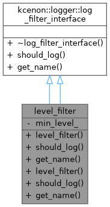

Custom filter that only allows specific log levels. More...


Public Member Functions | |
| level_filter (log_level min_level) | |
| bool | should_log (const log_entry &entry) const override |
| Check if a log entry should be processed. | |
| std::string | get_name () const override |
| Get the name of this filter. | |
| level_filter (log_level min_level) | |
| bool | should_log (const log_entry &entry) const override |
| Check if a log entry should be processed. | |
| std::string | get_name () const override |
| Get the name of this filter. | |
 Public Member Functions inherited from kcenon::logger::log_filter_interface Public Member Functions inherited from kcenon::logger::log_filter_interface | |
| virtual | ~log_filter_interface ()=default |
Private Attributes | |
| log_level | min_level_ |
Detailed Description
Custom filter that only allows specific log levels.
Simple level filter for demonstration.
- Examples
- decorator_usage.cpp, and writer_builder_example.cpp.
Definition at line 47 of file decorator_usage.cpp.
Constructor & Destructor Documentation
◆ level_filter() [1/2]
|
inlineexplicit |
- Examples
- decorator_usage.cpp, and writer_builder_example.cpp.
Definition at line 49 of file decorator_usage.cpp.
◆ level_filter() [2/2]
|
inlineexplicit |
Definition at line 41 of file writer_builder_example.cpp.
Member Function Documentation
◆ get_name() [1/2]
|
inlineoverridevirtual |
Get the name of this filter.
- Returns
- Filter name for identification
Implements kcenon::logger::log_filter_interface.
- Examples
- decorator_usage.cpp, and writer_builder_example.cpp.
Definition at line 55 of file decorator_usage.cpp.
◆ get_name() [2/2]
|
inlineoverridevirtual |
Get the name of this filter.
- Returns
- Filter name for identification
Implements kcenon::logger::log_filter_interface.
Definition at line 47 of file writer_builder_example.cpp.
◆ should_log() [1/2]
|
inlineoverridevirtual |
Check if a log entry should be processed.
- Parameters
-
entry The log entry to check
- Returns
- true if the entry should be logged, false otherwise
Implements kcenon::logger::log_filter_interface.
- Examples
- decorator_usage.cpp, and writer_builder_example.cpp.
Definition at line 51 of file decorator_usage.cpp.
References kcenon::logger::log_entry::level, and kcenon::logger::level_filter::min_level_.
◆ should_log() [2/2]
|
inlineoverridevirtual |
Check if a log entry should be processed.
- Parameters
-
entry The log entry to check
- Returns
- true if the entry should be logged, false otherwise
Implements kcenon::logger::log_filter_interface.
Definition at line 43 of file writer_builder_example.cpp.
References kcenon::logger::log_entry::level, and kcenon::logger::level_filter::min_level_.
Member Data Documentation
◆ min_level_
|
private |
- Examples
- decorator_usage.cpp, and writer_builder_example.cpp.
Definition at line 60 of file decorator_usage.cpp.
The documentation for this class was generated from the following files:
- examples/decorator_usage.cpp
- examples/writer_builder_example.cpp